Creating your first ASP.NET MVC web app.
Read/skim all of this document before you begin work.
Section A: Tuesday, January 30, 2018, 11:59pm
Grade value: 4% of your final course grade
If you wish to submit the lab before the due date and time, you can do that.
Get started with the creation of an interactive ASP.NET MVC web app.
We need a simple ASP.NET web app that round-trips data to-and-from the browser user.
Here’s a brief list of specifications that you must implement:
Here is a brief work plan sequence:
Every week, in the computer-lab class/session, your teacher will record a grade when you complete a specific small portion of the assignment. We call this “in-class grading”.
The in-class grading will look at:
During the class/session, your professor will help you get started and make progress on this assignment.
Create a new web app, named Assignment1.
In the “New Project” dialog, take care to select and configure the correct settings.
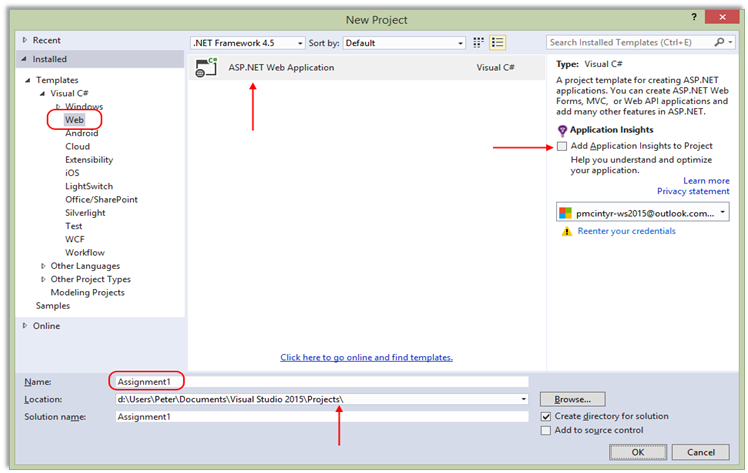
On this dialog:
Next, you will configure the “New ASP.NET Project” dialog. Again, take care to select and configure the correct settings.
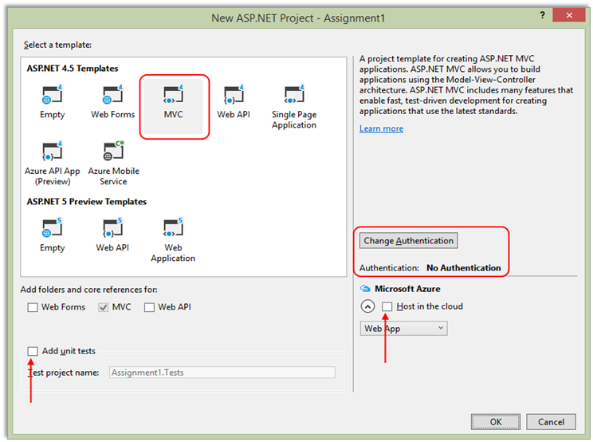
On this dialog:
Note: After creating a new project each time, you should immediately do a build/compile using Ctrl+Shift+B (Build>Build Solution), or start/run the project using Ctrl+F5 (Debug>Start Without Debugging) before you begin working with it. These build/compile and start/run actions will fetch the packages it needs from the web and make sure that the project is created without errors.
As you have learned, the web app includes a
substantial number of existing libraries. You should
must update this code with the latest versions. Here’s how. Open the “Package
Manager Console”.
It’s possible that it’s already open and docked at the bottom of your editor area. If it is, you will see it, and you can click it to open/expand the panel.
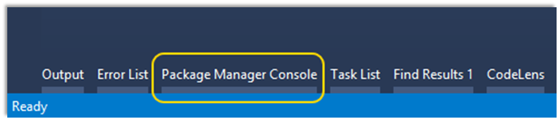
If it’s not there, then open it from the menu: Tools > NuGet Package Manager > Package Manager Console. It will appear at the bottom of your editor area.
Run the following command:
update-package
Then, build/compile your project’s code. That’s done from the menu Build > Build Solution (or its keyboard shortcut). After a few seconds, look for the “Build successful” message in the lower-left area of Visual Studio.
As you write code, you should frequently build/compile your project. That way, you can quickly identify and fix errors.
View your web app in a browser using Ctrl+F5 (Debug > Start Without Debugging).
You will customize the appearance all of your web apps and assignments. Never submit an assignment that has the generic auto-generated text content. Make the time to customize the web app’s appearance.
For this assignment, you can defer this customization work until later. Come back to it at any time, and complete it before you submit your work.
There are four customizations/fixes:
1. Update the page layout
In Solution Explorer, open the Views folder, and then the subfolders named Home and Shared.
Notice and then open the item named “_Layout.cshtml”. This is the layout code for ALL views in the app.
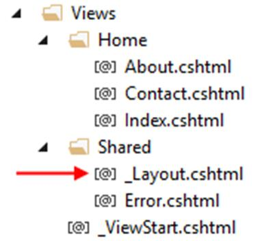
Study the code. Notice the code expressions that begin with an “at” sign ( @ ). These are C# code expressions. In the past, you have written PHP code expressions ( <? php-code ?> ). You will learn more about code expressions in views, and the Razor view engine, very soon.
ActionLink is an HTML Helper, which enables the view engine to render an HTML “a” link element, using static or dynamic values. Yes, you could use a simple “a” element, but the benefit of ActionLink is the dynamically-generated data that could be used.
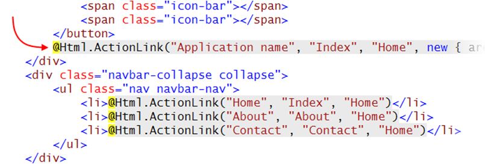
Locate the first ActionLink, which has “Application name” as its first argument. As the text suggests, it is the name of the application, and will appear in the upper-left area of the page, on the menu.
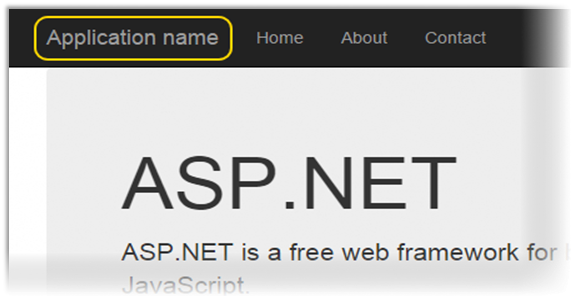
Change the name of the application to “Assignment 1”.
Add another menu item
When you study the code, you will see a modern navigation menu, composed of unordered list items (HTML “ul” and “li” elements). There are three menu items, Home, About, and Contact.
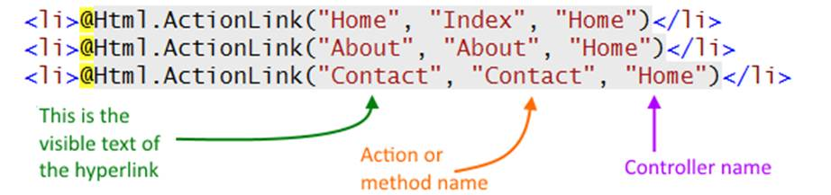
Later / below, you will create a controller. Add a new item to the menu, to enable the user to easily get access to one of the controller actions.
As you begin typing the opening tag of the “li” element, notice that the Visual Studio HTML Editor shows you choices that are available, in the context of the enclosing element.
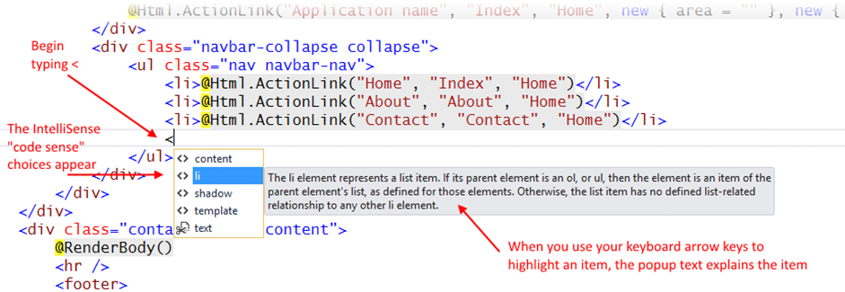
Use the existing ActionLink statements as a template for adding the new menu item.
When you type the ActionLink method’s open parenthesis, notice that another popup appears. Its purpose is to show you all the overloads available for that method, so that you can select the one you want. Use the keyboard arrow keys to go up-and-down, and read the descriptions. We want to use overload 4 of 10, where all three arguments are strings.
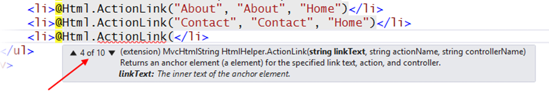
The value of linkText – the text visible to the browser user – will be “Phones”.
The value of actionName is the name of the method in the controller, which will be “Index”.
The value of controllerName is the first part of the controller name, which will be “Phones”.
2. Edit the copyright statement
The final edit is the copyright statement in the HTML “footer” element. Change “My ASP.NET Application” to your own name. Then the footer should be “© 2017 - <your name>”.
3. Edit the Index view
When you view your web app in a browser, using Ctrl+F5 (Debug > Start Without Debugging), the Home controller’s Index view appears. Click the open the image full size in its own tab or window.
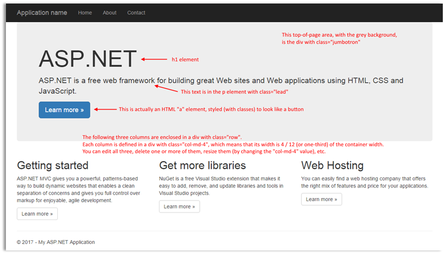
In Visual Studio, open the source code for the Home controller’s Index view. It is in the Views > Home folder, in a source code file named Index.cshtml.
Edit the content of this view. Here are some suggested edits. Use your common sense and logical reasoning.
4. Edit the About view
Edit the content of the About.cshtml source code.
Again, use your common sense and logical reasoning. Typically, an “About” page, in a web app, briefly describes the theme and purpose of the web app, and maybe provides some basic information about the author/programmer or company.
5. Edit the Contact view
Edit the content of the Contact.cshtml source code.
Again, use your common sense and logical reasoning. Typically, a “Contact” page, in a web app, describes how to contact the author/programmer or company.
For further assignments, you may delete the About and Contact pages.
As noted earlier, this web app will enable the browser user to view and create “phone” objects.
Therefore, we must write a C# class that will model a real-world phone object.
The browser user will be viewing and creating objects. The objects will exist in memory only, and will not be saved in a persistent store, or used elsewhere in the web app. Therefore, the source code file that holds the class code will be stored alongside the controller, in the Controllers folder.
In Solution Explorer, click/select the Controllers folder. Next, add a new class. You can do that in many ways:
The “Add New Item” dialog appears, with the “Class” item type already selected in the center panel.
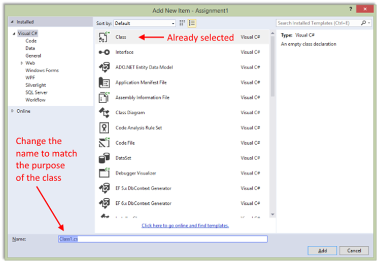
Change the name of the source code file to match the purpose of the class. We will always try to use a name that includes the singular word form of the entity, or entity group, that we are working with, with a “_vm” suffix. The “vm” in the suffix is an initialism for “view model”, and you will learn more about view model classes soon.
We are modeling phones, or smartphones. A nice and easy singular word form is “Phone”.
Therefore, the source code file will be named “Phone_vm”.
When saved, Visual Studio adds the “.cs” file extension.
Writing the class members
The source code file opens. Notice that it created an empty class code block. The name is “Phone_vm”, by default, to match the name of the source code file.
We do NOT want that. Change the name of the class to “PhoneBase”.
Now, add a constructor. The editor can help with that. Inside the class code block, type “ctor” (which is the last part of the word “constructor“).
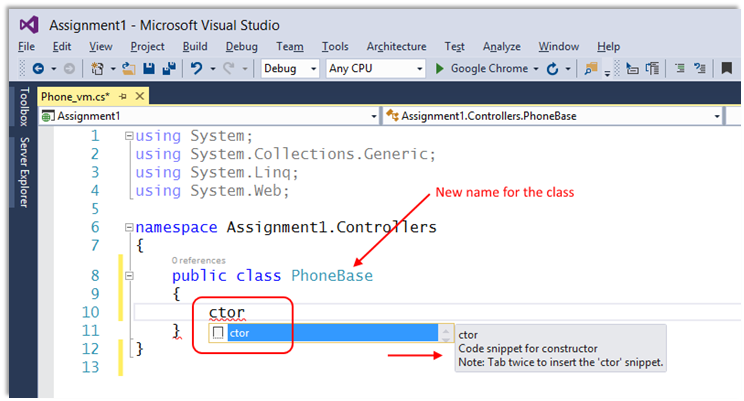
Then, as the popup text states, press Tab Tab, and the editor will add the code snippet for a default constructor. Later, we may add some code to the constructor.
Below the constructor, we will now add some properties, which will hold the publicly-accessible data (or state) of the object. In classes that describe real-world objects, we typically use auto-implemented properties.
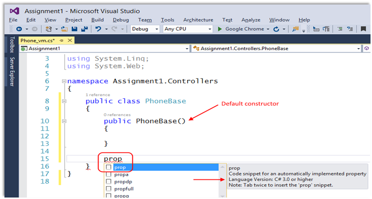
Type “prop”. Then, as the popup text states, press Tab Tab, and the editor will add the code snippet for an auto-implemented property.
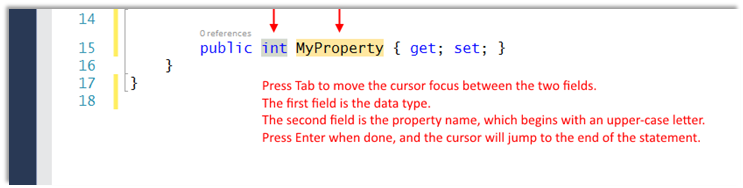
We need the following properties. Pay attention to property names and data types. They MUST match EXACTLY. Pay attention to the cadence or rhythm for adding properties – prop, tab tab, specify data type, tab, specify property name, enter, enter.
What about initial values? We configure them in the default constructor.
Later in the course, you will learn another way to do this.
Here are some required rules that you MUST follow for initial values:
If there is a DateTime property, it must be configured in the constructor. The easiest way for beginners to do this is to set the property to “DateTime.Now”, which is a property of the DateTime class.
If there is a collection property, it must be configured in the constructor. We will use the List<T> collection class most often, so a collection property can be set to “new List<T>()”, and replace T with the type of the object in the collection.
If there is a string property, it is usually a good idea to initialize it, even to an empty string (“”).
Numbers (int, double) are auto-initialized to zero, so they don’t need initialization, unless you want them to be set to a specific value.
In the MVC design pattern, a controller typically contains the user-interaction logic. We need a controller that will contain the view-and-create logic for phone objects.
In Solution Explorer, select/highlight the Controllers folder. Then add a controller? How? The easiest way is to right-click, then Add > Controller. An “Add Scaffold” dialog appears.
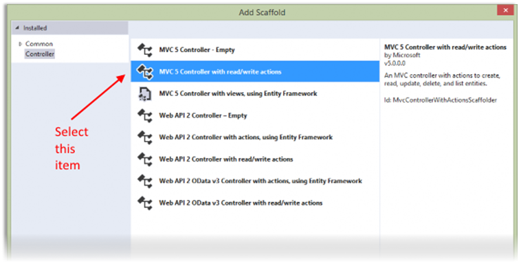
Select the second item, “MVC 5 Controller with read/write actions”. The next dialog asks you for the controller name.
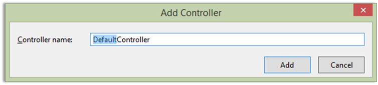
The controller name will use the plural word form of our entity or entity group – PhonesController.
Notice that the text for the word “Default” is already highlighted. Therefore, just type “Phones”, and it will replace “Default”. Do NOT backspace, do NOT press the Delete key, do NOT use your arrow keys (or the Home or End keys), do NOT reach for your mouse. (You do know how to use a computer, right? When editing text, Windows and its apps have worked this way for thirty years.)
When you’re done, the new controller source code file will open in the editor. Visual Studio will also create a new subfolder named “Phones” in the “Views” folder.
Study the generated code
As you will notice, the controller includes a number of methods. These came from an “item template”, which you may learn more about later in this course.
The methods cover the typical interaction use cases:
The last three use cases require two methods – one handles the GET request, and the other handles the POST request.
We will NOT be coding the “Edit existing” and “Delete item” use cases in this assignment. Therefore, delete or comment out those methods.
Declare a private field to hold an in-memory collection of phone objects. It will be the first member of the class, so add it at the top of the class, before the existing methods. Its declaration:
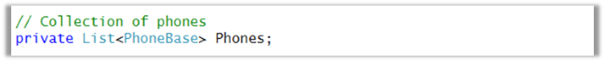
Next, add a default constructor. Use the “ctor” code snippet procedure that you have learned.
In the constructor, we will initialize the collection.
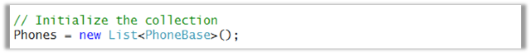
Then, we will add some phone objects to the collection. There are three common syntax forms for doing this, and here are examples:
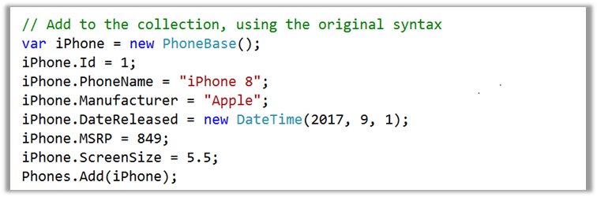
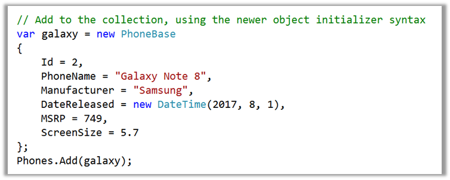
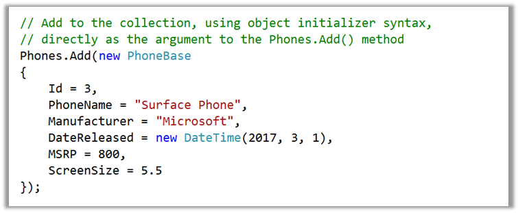
Remember – as you write code, incrementally, build/compile to ensure that there are no errors.
At this point in time, you have a data class, and a controller that gets initialized with three data objects.
We’re ready to display a list of these objects.
The Index() method will do that. The generated code includes the statement “return View();”, which causes this method’s view to be generated and returned to the browser user.
If you need to pass data to the view – and yes, we do – include it as an argument. Therefore, pass the “Phones” collection to the view. Change the return statement to “return View(Phones);”.
Does the source code for the view exist? Not yet. We’ll do that now. With the cursor positioned within the Index() method’s code block, right-click, and choose “Add View”. A dialog appears, and must be completed as shown:
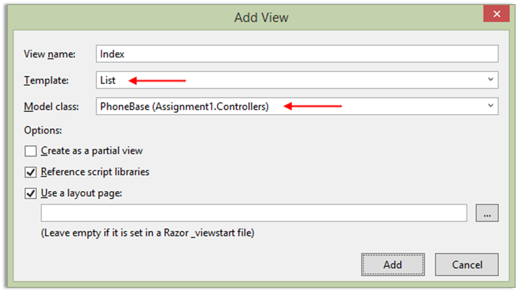
After adding the view, look in Solution Explorer, and notice that Index.cshtml was added to the Phones subfolder of the Views folder.
At this point in time, you can probably run the project (Ctrl+F5) to load it in a browser. If all is well, you will see your list of phone objects.
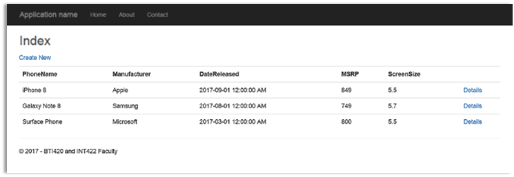
Fixes that you could do to this view
The generated view is very generic. Its title is lame, so you should change it to something that’s meaningful, in the view source code.
Also, we will NOT be doing “Edit” or “Delete” tasks in this assignment. Therefore, you can remove (or comment out) those hyperlinks.
The Details() method will enable us to display one specific object in a collection. The generated code includes the statement “return View();”, which causes this method’s view to be generated and returned to the browser user.
If you need to pass data to the view – and yes, we do – include it as an argument. Therefore, pass a single phone object to the view.
Now, think about this: The method includes an “id” parameter, so that we can match it to some identifier that we have in the object. We do have an identifier in the object, and we could search for it, but let’s keep it simple. Let’s use index-based access to the collection instead.
Each object in the “Phones” collection can be accessed by index.
Therefore, this is probably the object that we want to pass to the view: Phones[id – 1]
Does the source code for the view exist? Not yet. We’ll do that now. With the cursor positioned within the Details() method’s code block, right-click, and choose “Add View”. A dialog appears, and must be completed as shown:
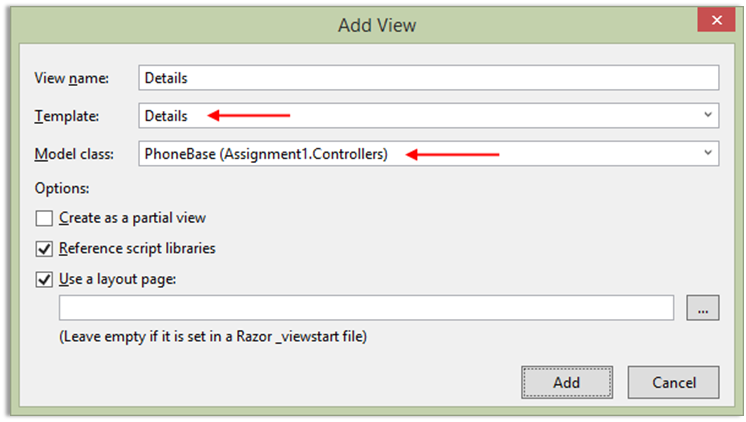
After adding the view, look in Solution Explorer, and notice that Details.cshtml was added to the Phones subfolder of the Views folder.
At this point in time, you can probably run the project (Ctrl+F5) to load it in a browser.
You will probably see an error page. That’s easy to fix. Look at the URL – it does not have the identifier parameter. Add it, for example: /phones/details/2
If all is well, you will see the specific object.
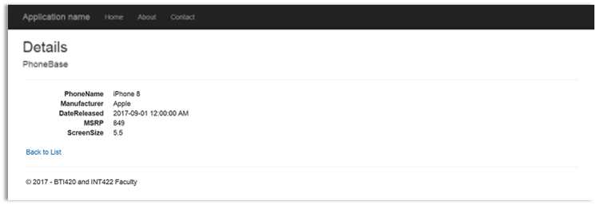
Fixes that you could do to this view
The generated view is very generic. Its title is lame, so you should change it to something that’s meaningful, in the view source code.
Also, we will NOT be doing the “Edit” task in this assignment. Therefore, you can remove (or comment out) that hyperlink.
As noted above, the “add new” use case is handled by a pair of Create() methods:
The first method, with no parameters, handles the GET request. Its purpose is to display the HTML Form to the browser user. If we want to prepare and send data to the view – for example, with initial data – we can create, configure, and send an object as an argument to the “return View();” statement.
The second method, with the FormCollection parameter, handles the POST request. Its purpose is to accept the data that the browser user entered, and do something with it.
Work with the method that handles the GET request
We suggest that yes, it would be easier for the browser user, if you were to send some initial data to the view in this method. Why? It becomes easier to enter a date-and-time value.
Therefore, you can pass a new phone object to the view (e.g. “new PhoneBase()”).
Does the source code for the view exist? Not yet. We’ll do that now. With the cursor positioned within the Create() method’s code block, right-click, and choose “Add View”. A dialog appears, and must be completed as shown:
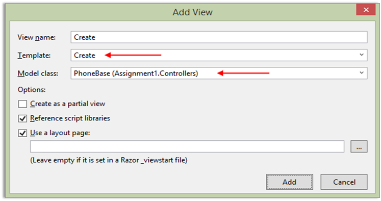
After adding the view, look in Solution Explorer, and notice that Create.cshtml was added to the Phones subfolder of the Views folder.
At this point in time, you can probably run the project (Ctrl+F5) to load it in a browser. If all is well, you will see an HTML Form.
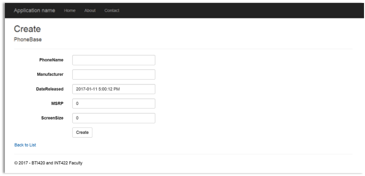
Fixes that you could do to this view
The generated view is very generic. Its title is lame, so you should change it to something that’s meaningful, in the view source code.
Work with the method that handles the POST request
As noted above, the Create() method with the FormCollection parameter handles data that the browser user sends or submits. The method is preceded by a code statement [HttpPost] which ensures that this happens.
The FormCollection parameter is a collection property, of key-value pairs:
Each item in the FormCollection can be dereferenced (accessed) with a named indexer, using the key name.
In the past, using PHP, you got access to data in the $_POST variable. Similar concept.
The first task is to create a new, empty phone object. Then, configure its unique identifier:
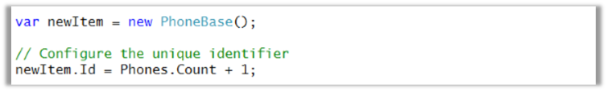
Next, configure the string and date-and-time properties of the phone object:
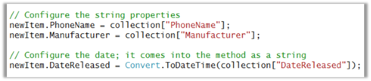
Then, configure the number properties, using the technique you learned in a recent class/session:
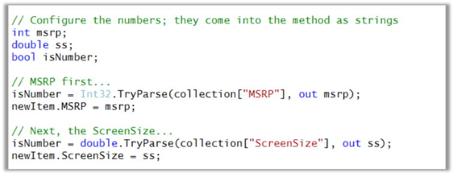
At this point in time, you have a nicely-configured phone object. We need to add it to the in-memory collection. We should also tell the user about it – why don’t we pass the new object to the “Details” view? (We cannot permanently store the object yet, but it would be nice to show the user that their work was accepted.) The View method has an overload which takes the name of a view (e.g. “Details”), and an object to pass on to that view.
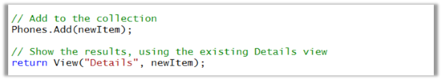
Incidentally, you just used a famous and awesome web app pattern, PRG – post, redirect, get. We’ll discuss that pattern more in the near future.
In a browser, test your work, by doing tasks that fulfill the use cases in the specifications.
You must comply with the College’s academic honesty policy. Although you may interact and collaborate with others, you must submit your own work.
Here’s how to submit your work, before the due date and time:
1. Locate the folder that holds your solution files. In Solution Explorer, right-click the “Solution” item, and choose “Open Folder in File Explorer”.
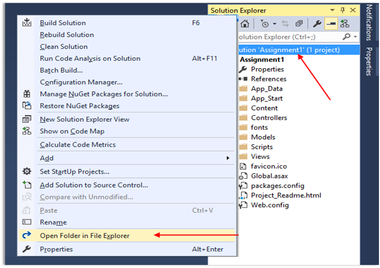
It has three (or more) items: a Visual Studio Solution file, a folder that has your project’s source code, and a “packages” folder.
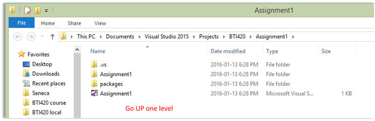
Go UP one level.
2. Make a copy of the folder. This is the version that you will be uploading.
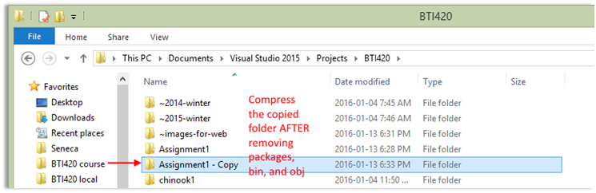
3. Remove the “packages” folder from the copied folder; also, remove the “bin” and “obj” folders.
4. Compress/zip the copied folder. The zip file SHOULD be about 1MB or less in size. If it isn’t, you haven’t followed the instructions properly.
5. Login to My.Seneca. Open the Web Programming on Windows course area. Click the “Assignments” link on the left-side navigator. Follow the link for this lab. Submit/upload your zip file. The page will accept three submissions, so if you upload, then decide to fix something and upload again, you can do so.